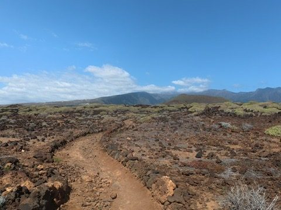
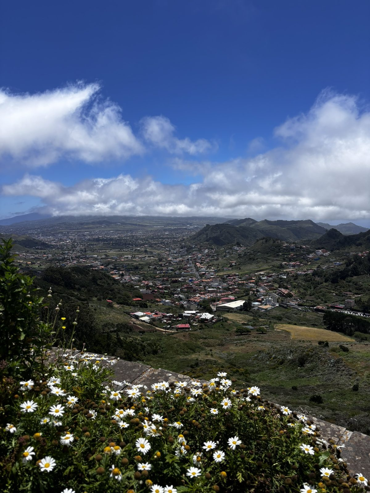
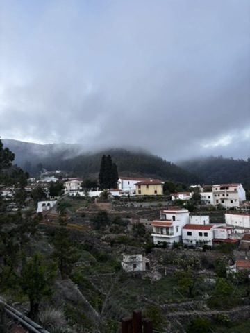
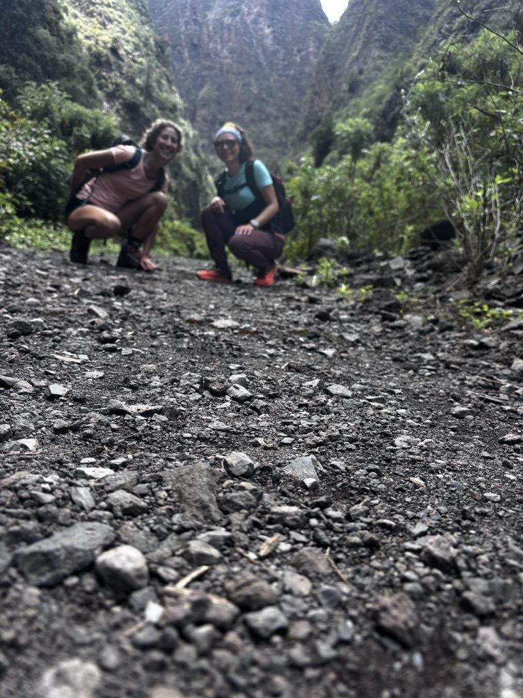
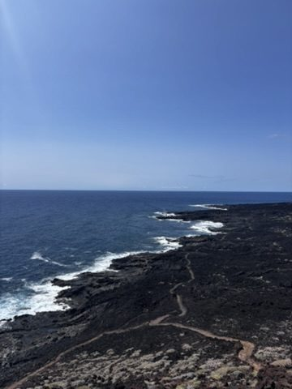
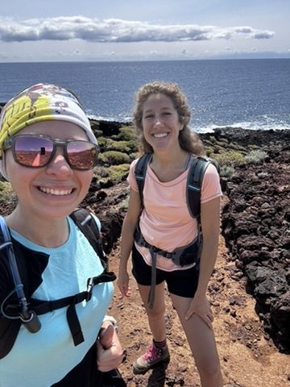

The thing people don't understand about Tenerife before they go is that it's not one island — it's four or five, stacked on top of each other by altitude and weather system, each one completely indifferent to the others. The south is desert. The north is jungle. The peaks are above the clouds. The coast is black volcanic rock being beaten by open Atlantic. None of these places look like they belong to each other.
I figured this out by hiking three of them in three days with an Italian woman I met at the cowork on a Tuesday afternoon.
Her name was Giulia. She was from Milan, working remotely in marketing, and she had done more hiking than me and was not shy about it. We talked about trails for forty minutes over laptops and decided to go the next morning. This is, I have found, the correct way to make hiking plans with strangers: quickly, before you have time to overthink it.
The south: Mars, but with a trail marker
We started in the south because I wanted her to see the version of Tenerife that surprises people most. The one that looks completely wrong — like someone dropped a Martian landscape into the middle of the Atlantic and built a hotel next to it.

The south. Ancient lava field, red dirt trail, no shade, no people. The mountains in the distance are a different Tenerife entirely.
The trail runs through old lava fields — the kind that have been there long enough to develop a thin crust of lichen and scrub, but not long enough to look anything other than volcanic. The rock is brown and black and porous, and the trail is a thin red line through it that you follow because there's nothing else to follow. No trees. No landmarks. Just the path, the sky, and the mountains somewhere ahead that look like they belong to a completely different island.
Giulia was quiet for a while, which I took as a good sign. The south of Tenerife makes people quiet. There is something about a landscape that looks like nothing you've seen before that requires a moment of recalibration — you need to update your sense of what's possible before you can start talking about it.
The north: daisies and a view that earns its altitude
The north of Tenerife is the island's other personality — green, lush, loud with birds, permanently in mild disagreement with the clouds about who owns the sky. We drove up into it after lunch and the change was immediate and total. One minute: lava. Next minute: terraced farms, banana trees, the smell of damp soil.

The north, from height. Daisies in the foreground, valley town below, Teide in the cloud on the left. Three different landscapes in a single frame.
The viewpoint we hiked to looks out over a valley of the kind that makes you feel the island is bigger than it has any right to be. A town sits in a bowl of green hills below. Above it, cloud. Above the cloud, Teide — visible as a faint dark triangle if you know where to look. In the foreground, a ledge of wild daisies growing in the kind of cheerful abundance that seems slightly incongruous at altitude.
We sat there for a while. Giulia said that Italy doesn't have views like this. I said that Romania doesn't either. We agreed that Tenerife was doing something unfair by putting all of this on one relatively small island.
The village in the fog
Later that afternoon we drove further north, into the part of the island where the clouds come to live. The fog moved in while we were still on the road and by the time we reached the village it was thick enough to make the pine trees look like silhouettes of themselves.

The fog village. White houses, terraced gardens, low cloud moving through the pines. This is the Tenerife that doesn't appear in hotel brochures.
The village is the kind of place that makes you understand why people stay in places like this for their whole lives. Not because it's easy — the terraced gardens suggest considerable effort — but because waking up to this fog every morning, watching it lift or thicken or shift depending on the wind, would give your days a particular quality of attention. You would never stop watching it. That is not a bad way to live.
The coast: black lava, blue water, and the gorge
The gorge was Giulia's idea, and I want to be clear that I would not have done it alone. It looked, from the outside, like a narrow crack in a cliff face. It was. The trail inside is dark volcanic gravel and the walls close in on both sides until you're moving through a corridor of rock with ferns growing in every crack and the sound of water somewhere you can't see.

The gorge. The camera is on the ground because the gorge required a creative approach to documentation. Both of us are fine.
We came out the other end onto a coastal trail that ran along the top of the lava cliffs — black rock, white wave, blue sea, the faint outline of another island on the horizon that might have been La Gomera.

After the gorge. Black lava, Atlantic, a distant island that might be La Gomera. The path continues further than you can see.
We walked it back in mostly comfortable silence, which is the correct measure of whether a hiking companion is a good one. Giulia was a good one. We agreed to do the Anaga forest before she left, but then her project deadline moved and she flew back to Milan and we never did. That is also how it goes sometimes.

Giulia and me, on the coastal trail, after the gorge. One of us is slightly more sunburned than the other. I'll let you guess which one.
Three landscapes in three days. The south that looks like another planet. The north that looks like it belongs to a different, much greener island. The gorge that Giulia proposed and I only agreed to because I trusted her hiking credentials.
Tenerife is too much island for one trip. Go back. It will not look the same twice.